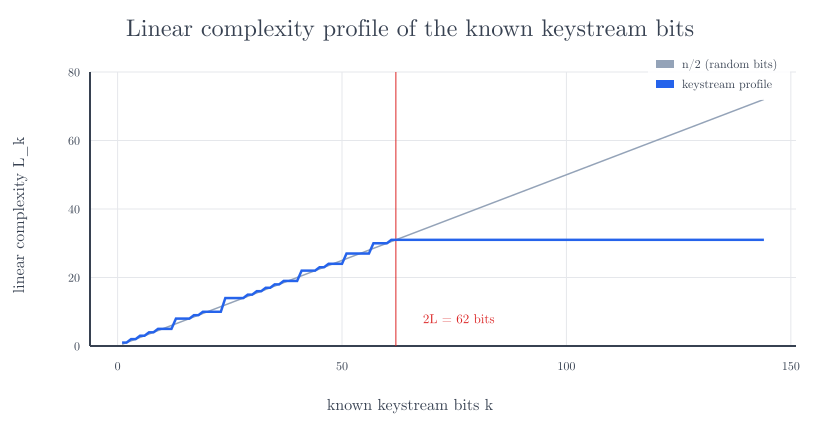
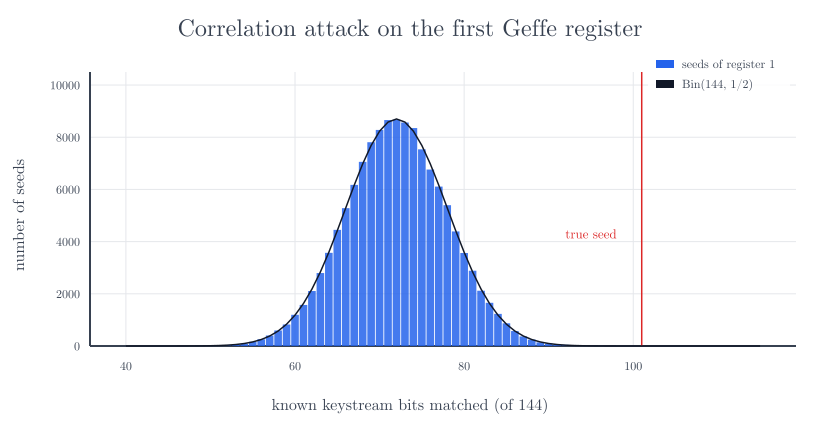
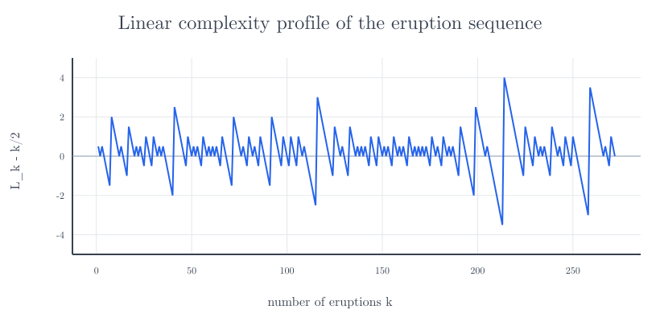

The Berlekamp–Massey Algorithm
Abstract
The Berlekamp–Massey algorithm finds the shortest linear feedback shift register
(LFSR) that generates a sequence. Its length is the sequence's linear
complexity. We derive the algorithm from Massey's lemma, derive the jump
distribution \(2^{-k}\) behind the \(n/2\) profile of random bits, and put it to
work on dm::datasets::faithful(). Written as CSV and encrypted with a 31-bit
LFSR keystream, the data falls to an attacker who knows only the 18-byte header:
62 keystream bits give back the register, the key and every byte. A Geffe
combiner of three registers raises the linear complexity to
\(L_1L_2+L_2L_3+L_3=783\), beyond what the header reveals. Its 3/4 correlation
with two of the registers still lets a divide-and-conquer search recover the
59-bit key in about 2 seconds, and we derive when 144 known bits suffice
(\(n>8\ln N\)). Finally, the long/short eruption sequence has strong Markov
structure but a linear complexity profile indistinguishable from fair coin
flips: linear complexity sees only linear structure. New library pieces are
algorithms::lfsr_sequence, linear_complexity_profile,
expected_linear_complexity, geffe_sequence, lfsr_correlation_scan and
datasets::to_csv.
Linear feedback shift registers
A linear feedback shift register (LFSR) of length \(L\) holds the last \(L\) bits of a sequence and produces each new bit as an XOR of some of them:
The taps are summarised by the connection polynomial \(C(x)=1+c_1x+\dots+c_Lx^L\) over \(\mathrm{GF}(2)\). In generating-function form, with \(S(x)=\sum_i s_ix^i\), the recurrence says that every coefficient of \(C(x)S(x)\) from \(x^L\) upwards vanishes:
An LFSR sequence is a rational power series, and the seed \(s_0,\dots,s_{L-1}\) is encoded in \(P\). When \(C\) is primitive of degree \(L\), every non-zero seed runs through all \(2^L-1\) non-zero states before repeating, so a 31-stage register has period about \(2.1\times10^9\). Such m-sequences pass most statistical randomness tests: they are balanced, and runs of each length occur in the expected proportions. That made them the classic keystream generator, and the linear complexity \(L(s)\), the length of the shortest LFSR that generates a sequence, the natural measure of how weak a keystream is.
The algorithm
The Berlekamp–Massey algorithm (Berlekamp 1968, Massey 1969) finds the shortest LFSR for \(s_0,\dots,s_{n-1}\) in a single pass, in \(O(n^2)\) operations.
Massey's lemma
Suppose an LFSR of length \(L\) generates \(s_0,\dots,s_{n-1}\) but predicts \(s_n\) wrongly. Then every LFSR that generates \(s_0,\dots,s_n\) has length at least \(n+1-L\).
The proof is short. Let the second register have length \(L'\) and suppose \(L'\le n-L\). Write \(a_i=\sum_jc_js_{i-j}\) for the first register's prediction and \(a'_i\) for the second's. For \(i\le n\) the second register is exact, so \(s_i=a'_i\), and for \(L\le i<n\) the first one is, so \(s_i=a_i\). Then
where the inner substitutions are valid because \(n-j\ge L'\) and \(n-k\ge L\) when \(L+L'\le n\). So the first register predicts \(s_n\) correctly after all, a contradiction. Writing \(L_n\) for the linear complexity of the first \(n\) bits, the lemma gives
Two consequences matter below. A sequence with \(L(s)=L\) is fixed by any \(2L\) consecutive bits: two different registers of length at most \(L\) cannot agree on \(2L\) bits. And the complexity can only jump when \(2L_n\le n\).
Correcting the register
At step \(n\) the algorithm computes the discrepancy \(d=s_n\oplus\sum_{j=1}^{L}c_js_{n-j}\). If \(d=0\) the current register \(C\) still works. If \(d=1\), it adds a shifted copy of \(B\), the register saved just before the last length change, at step \(n-m\), whose own discrepancy was also 1:
The shifted copy of \(B\) predicts \(s_{n}\) with the same failure that \(B\) made at step \(n-m\), and agrees with the sequence elsewhere, so the two errors cancel. The new length is \(\max(L,n+1-L)\), which Massey's lemma shows is the least possible. If the length grew, the old \(C\) becomes the new \(B\). Over a general field the update is \(C\leftarrow C-(d/b)x^mB\), with \(b\) the discrepancy saved with \(B\). This is the form used to decode BCH and Reed–Solomon codes, where the sequence is the syndromes and \(C\) is the error-locator polynomial.
BerlekampMassey(s_0..s_{n-1}):
C = 1, B = 1, L = 0, m = 1
for i in 0..n-1:
d = s_i XOR (XOR over j=1..L of c_j s_{i-j})
if d == 0: m = m + 1
else if 2L <= i: T = C; C = C + x^m B; L = i + 1 - L; B = T; m = 1
else: C = C + x^m B; m = m + 1
return L, CThe register length after step \(i\) is \(L_{i+1}\), so one pass gives the whole
linear complexity profile \(L_1,\dots,L_n\).
algorithms::linear_complexity_profile returns it.
The profile of a random sequence
If the bits are independent and fair, each discrepancy is a fair coin independent of the past, because \(s_n\) is. Suppose the length has just jumped to \(L\) at step \(i_0\), so \(L\ge(i_0+1)/2\). Steps before \(2L\) cannot change the length. The first step \(i\ge 2L\) with \(d=1\) has \(i=2L+j\) with probability \(2^{-(j+1)}\), and moves the length to \(i+1-L=L+j+1\). The jumps \(K=j+1\) are therefore independent with
and after each jump the profile returns to the line \(L=n/2\). Rueppel (1986) summed this to
A random sequence therefore tracks \(n/2\) to within a bit or two. The test suite checks the formula against all \(2^n\) sequences for \(n\le 12\). A sequence from a short register instead stops at its length \(L\) once \(n\ge 2L\).
Breaking an LFSR stream cipher
A stream cipher XORs the message with a keystream: \(c_i=m_i\oplus k_i\). Our
message is dm::datasets::faithful() written as CSV text with
datasets::to_csv. Its 272 Old Faithful eruptions, durations and waiting times,
make 2,271 bytes, or 18,168 bits. The keystream is an LFSR with the primitive
trinomial \(C(x)=1+x^3+x^{31}\) whose 31-bit secret key is the initial state.
Brute force would try \(2^{31}\) keys. Instead, the attacker guesses that the
file starts with the header eruptions,waiting and a newline, 18 bytes. XORing
these with the first 144 ciphertext bits gives 144 keystream bits.
Berlekamp–Massey needs only \(2L=62\) of them.
#include <dm/dm.hpp>
namespace alg = dm::algorithms;
// Connection polynomial 1 + x^t1 + ... + x^degree.
std::vector<int> connection(int degree, std::vector<int> taps) {
std::vector<int> c(degree + 1, 0);
c[0] = c[degree] = 1;
for (int t : taps) c[t] = 1;
return c;
}
int main() {
std::filesystem::create_directories("build");
const auto faithful = dm::datasets::faithful();
const std::string plain = dm::datasets::to_csv(faithful);
const auto message = alg::bytes_to_bits(plain);
// Encrypt: keystream from the 31-stage register, key = its initial state.
const auto C = connection(31, {3});
std::mt19937_64 rng(1968);
std::vector<int> key(31);
for (auto &bit : key) bit = static_cast<int>(rng() & 1);
const auto cipher =
alg::xor_bits(message, alg::lfsr_sequence(C, key, message.size()));
// Attack: known header -> 144 keystream bits -> shortest register -> decrypt everything.
const auto known =
alg::xor_bits(cipher, alg::bytes_to_bits("eruptions,waiting\n"));
const auto decrypt_with = [&](std::size_t k) {
const auto fit =
alg::berlekamp_massey(std::vector<int>(known.begin(),
known.begin() + k));
const std::vector<int> seed(known.begin(), known.begin() + fit.length);
const auto guess =
alg::xor_bits(cipher,
alg::lfsr_sequence(fit.polynomial, seed, cipher.size()));
return std::pair{fit, alg::bits_to_bytes(guess)};
};
const auto byte_accuracy = [&](const std::string & text) {
std::size_t same = 0;
for (std::size_t i = 0; i < plain.size(); ++i)
same += text[i] == plain[i];
return static_cast<double>(same) / static_cast<double>(plain.size());
};
std::print("Message: {} bytes, {} bits. Known keystream bits: {}.\n\n",
plain.size(), message.size(), known.size());
std::print("| known bits \\(k\\) | \\(L_k\\) | register found | bytes decrypted correctly |\n| ---: | ---: | :--- | ---: |\n");
for (std::size_t k : {16, 32, 48, 60, 61, 62, 64, 144}) {
const auto[fit, text] = decrypt_with(k);
std::print("| {} | {} | {} | {:.1f}% |\n", k, fit.length,
fit.polynomial == C ? "the true \\(C(x)\\)" : "wrong",
100.0 * byte_accuracy(text));
}
std::size_t needed = 0;
for (std::size_t k = 1; k <= known.size() && needed == 0; ++k)
if (decrypt_with(k).second == plain) needed = k;
const auto[fit, text] = decrypt_with(known.size());
std::print("\nFewest known bits that decrypt the whole file: {}. Recovered key equals the secret key: {}.\n",
needed,
std::vector<int>(known.begin(), known.begin() + 31) == key
? "yes" : "no");
std::print("\nThe decrypted file parsed back with `datasets::parse_csv` (first rows):\n\n{}",
dm::datasets::parse_csv(text).head(4).to_md());
const auto profile = alg::linear_complexity_profile(known);
std::vector<double> k, Lk, half;
for (std::size_t i = 0; i < profile.size(); ++i) {
k.push_back(i + 1.0);
Lk.push_back(profile[i]);
half.push_back((i + 1.0) / 2.0);
}
dm::graphics::RPlot::create().lines(k, half, "n/2 (random bits)",
dm::RGB{148, 163, 184}, 1.5).lines(
k, Lk, "keystream profile", dm::RGB{37, 99, 235}, 2.5).abline_v(
62, dm::RGB{220, 38, 38}, 1.0).text(76, 8, "2L = 62 bits",
dm::RGB{220, 38, 38}, 13).y_limits(
0, 80).title("Linear complexity profile of the known keystream bits").x_label("known keystream bits k").y_label("linear complexity L_k").size(820, 430).save_svg("build/berlekamp_massey_keystream.svg");
}Message: 2271 bytes, 18168 bits. Known keystream bits: 144.
| known bits \(k\) | \(L_k\) | register found | bytes decrypted correctly |
|---|---|---|---|
| 16 | 8 | wrong | 0.4% |
| 32 | 16 | wrong | 0.5% |
| 48 | 24 | wrong | 0.7% |
| 60 | 30 | wrong | 0.7% |
| 61 | 31 | wrong | 0.8% |
| 62 | 31 | the true \(C(x)\) | 100.0% |
| 64 | 31 | the true \(C(x)\) | 100.0% |
| 144 | 31 | the true \(C(x)\) | 100.0% |
Fewest known bits that decrypt the whole file: 62. Recovered key equals the secret key: yes.
The decrypted file parsed back with datasets::parse_csv (first rows):
| eruptions | waiting |
|---|---|
| 3.600 | 79 |
| 1.800 | 54 |
| 3.333 | 74 |
| 2.283 | 62 |

Up to 60 known bits, the keystream looks random to Berlekamp–Massey: the profile follows the line \(k/2\), the register it returns is wrong, and decryption gets under 1% of the bytes right, which is chance. At \(k=61\) the length has reached 31, but 61 bits do not yet single out the register, and the one returned is still wrong. At exactly \(k=2L=62\) the algorithm returns the true connection polynomial \(1+x^3+x^{31}\). Its first 31 bits are the key, and the whole 2,271-byte file decrypts and parses back to the original data frame. Extra known bits change nothing: the profile stays flat at 31. A key space of \(2^{31}\) is irrelevant. What protects an LFSR keystream is only its linear complexity, and 31 is tiny.
A nonlinear combiner: the Geffe generator
The obvious fix is to combine several registers nonlinearly. The Geffe generator uses three LFSRs and lets the second choose between the other two:
Its linear complexity
Over the splitting field, an m-sequence from a primitive \(C\) of degree \(L\) is a sum \(\sum_{r}\gamma_r\alpha^{2^ri}\) over the \(L\) conjugate roots of its reciprocal polynomial, and the linear complexity of any such sum is the number of distinct roots it uses. A product \(x_1x_2\) uses the \(L_1L_2\) roots \(\alpha^{2^r}\beta^{2^t}\). These are all distinct when \(L_1\) and \(L_2\) are coprime, and they differ from every root of a register of another coprime length. Sums of sequences with disjoint roots add their complexities, so
With \(L_1,L_2,L_3=17,19,23\) the key has 59 bits and \(L(z)=323+437+23=783\). Berlekamp–Massey now needs 1,566 known keystream bits, 196 bytes, and the 18-byte header is far too short.
Its correlation weakness
Linear complexity is not the whole story. \(z\) equals \(x_1\) whenever \(x_2=1\), and otherwise agrees with \(x_1\) by chance:
So the attacker can attack the registers one at a time (Siegenthaler 1985). For
each of the \(N=2^{17}\) seeds of the first register,
algorithms::lfsr_correlation_scan counts how many of the \(n=144\) known
keystream bits its output matches. A wrong seed matches \(\mathrm{Bin}(n,1/2)\)
bits, mean \(n/2=72\) and standard deviation \(\sqrt n/2=6\). The true seed
matches \(\mathrm{Bin}(n,3/4)\), mean 108 and standard deviation 5.2. But the
true seed must beat the best of \(N-1\) wrong seeds, and the maximum of \(N\)
near-normal scores lies about \(\sqrt{2\ln N}\) standard deviations above their
mean:
For the first register \(8\ln N=94\), and the best wrong score should be near 101. For the third, with \(N=2^{23}\), \(8\ln N=127\) and the best wrong score near 106, so 144 known bits are only just enough. The block computes the exact probability that the true seed ranks first. To be safe the attack keeps the 50 best seeds of each scan and tests every pair exactly: where \(x_1=x_3\) the keystream bit equals both whatever \(x_2\) is, so a wrong pair fails one of those 70-odd positions almost surely. Where \(x_1\ne x_3\), each keystream bit then reveals \(x_2\), and a third scan on only those positions finds the second register. The work is \(2^{17}+2^{19}+2^{23}\approx 9\times10^6\) register runs instead of \(2^{59}\approx 6\times10^{17}\).
#include <dm/dm.hpp>
namespace alg = dm::algorithms;
std::vector<int> connection(int degree, std::vector<int> taps) {
std::vector<int> c(degree + 1, 0);
c[0] = c[degree] = 1;
for (int t : taps) c[t] = 1;
return c;
}
int main() {
std::filesystem::create_directories("build");
const auto faithful = dm::datasets::faithful();
const std::string plain = dm::datasets::to_csv(faithful);
const auto message = alg::bytes_to_bits(plain);
const std::size_t n = message.size();
// Three primitive registers of coprime lengths 17, 19, 23, and a 59-bit key.
const std::vector<std::vector<int>> C = {connection(17, {3}),
connection(19, {1, 2, 5}),
connection(23, {5})};
std::mt19937_64 rng(1985);
std::vector<std::vector<int>> key, x;
for (const auto &c : C) {
std::vector<int> seed(c.size() - 1);
for (auto &bit : seed) bit = static_cast<int>(rng() & 1);
seed[0] = 1;
key.push_back(seed);
x.push_back(alg::lfsr_sequence(c, seed, n));
}
std::print("| register | length \\(L\\) | period found | \\(2^L-1\\) |\n| ---: | ---: | ---: | ---: |\n");
for (int r = 0; r < 3; ++r) {
const int L = static_cast<int>(C[r].size()) - 1;
std::print("| {} | {} | {} | {} |\n", r + 1, L,
alg::lfsr_period(C[r], key[r]), (1LL << L) - 1);
}
const auto z = alg::geffe_sequence(x[0], x[1], x[2]);
const auto cipher = alg::xor_bits(message, z);
// Linear complexity of the keystream.
const auto profile =
alg::linear_complexity_profile(std::vector<int>(z.begin(),
z.begin() + 2400));
std::print("\nLinear complexity of the Geffe keystream: \\(L_{{1566}}={}\\), \\(L_{{2400}}={}\\); " "theory \\(L_1L_2+L_2L_3+L_3={}\\).\n",
profile[1565], profile[2399], 17 * 19 + 19 * 23 + 23);
const auto known =
alg::xor_bits(cipher, alg::bytes_to_bits("eruptions,waiting\n"));
std::print("Berlekamp–Massey on the 144 known bits: register of length {}.\n",
alg::berlekamp_massey(known).length);
for (int r = 0; r < 3; ++r) {
std::size_t same = 0;
for (std::size_t i = 0; i < n; ++i) same += z[i] == x[r][i];
std::print("Agreement of \\(z\\) with \\(x_{}\\): {:.4f}.\n", r + 1,
static_cast<double>(same) / n);
}
// Divide and conquer. Scan registers 1 and 3 by correlation and keep their 50 best seeds.
const auto t0 = std::chrono::steady_clock::now();
const auto score1 = alg::lfsr_correlation_scan(C[0], known);
const auto score3 = alg::lfsr_correlation_scan(C[2], known);
const auto top = [](const std::vector<int> & score, std::size_t K) {
std::vector<long long> order(score.size());
std::iota(order.begin(), order.end(), 0LL);
std::ranges::partial_sort(order, order.begin() + K, [&](long long a, long long b) {
return score[a] > score[b];
});
return std::vector<long long>(order.begin(), order.begin() + K);
};
const std::size_t K = 50;
const auto top1 = top(score1, K), top3 = top(score3, K);
// Where x1 == x3 the keystream bit equals both, whatever x2 is: an exact test of each pair.
std::vector<std::pair<long long, long long>> consistent;
for (long long a : top1) {
const auto xa =
alg::lfsr_sequence(C[0], alg::lfsr_seed(a, 17), known.size());
for (long long b : top3) {
const auto xb =
alg::lfsr_sequence(C[2], alg::lfsr_seed(b, 23), known.size());
bool ok = true;
for (std::size_t i = 0; i < known.size() && ok; ++i)
ok = xa[i] != xb[i] || xa[i] == known[i];
if (ok) consistent.emplace_back(a, b);
}
}
// For the surviving pair, x2 is known exactly wherever x1 != x3: scan register 2 on those bits.
const auto[a, b] = consistent.front();
const auto x1 =
alg::lfsr_sequence(C[0], alg::lfsr_seed(a, 17), known.size());
const auto x3 =
alg::lfsr_sequence(C[2], alg::lfsr_seed(b, 23), known.size());
std::vector<int> x2_known(known.size(), 2); // 2 = unknown
for (std::size_t i = 0; i < known.size(); ++i)
if (x1[i] != x3[i]) x2_known[i] = known[i] == x1[i];
const auto score2 = alg::lfsr_correlation_scan(C[1], x2_known);
const auto c2 = top(score2, 2);
const double seconds =
std::chrono::duration<double>(std::chrono::steady_clock::now() - t0).count();
const std::vector<std::vector<int>> found = {alg::lfsr_seed(a, 17),
alg::lfsr_seed(c2[0], 19),
alg::lfsr_seed(b, 23)};
// Rank of the true seed in each scan, and the chance that a Bin(n, 3/4) score beats
// N - 1 independent Bin(n, 1/2) scores.
const auto code_of = [](const std::vector<int> & seed) {
long long code = 0;
for (std::size_t i = 0; i < seed.size(); ++i)
code |= static_cast<long long>(seed[i]) << i;
return code;
};
const auto rank = [](const std::vector<int> & score, long long truth) {
return 1 + std::ranges::count_if(score, [&](int v) {
return v > score[truth];
});
};
const auto pmf = [](int n, double q, int t) {
return std::exp(std::lgamma(n + 1.0) - std::lgamma(t + 1.0) -
std::lgamma(n - t + 1.0) + t * std::log(q) +
(n - t) * std::log1p(-q));
};
const auto p_first = [&](int n, double N) {
double total = 0, below = 0; // below = P(Bin(n, 1/2) < t)
for (int t = 0; t <= n; ++t) {
total +=
pmf(n, 0.75, t) * std::exp((N - 1) * std::log(
std::max(below, 1e-300)));
below += pmf(n, 0.5, t);
}
return total;
};
std::print("\n| register | seeds tried | true seed's score | best wrong score | rank of true seed | P(true seed ranks first) |\n" "| ---: | ---: | ---: | ---: | ---: | ---: |\n");
for (auto[r, score] : {std::pair{0, &score1}, std::pair{2, &score3}}) {
const long long truth = code_of(key[r]);
int wrong = 0;
for (std::size_t c = 0; c < score->size(); ++c)
if (static_cast<long long>(c) != truth)
wrong = std::max(wrong, (*score)[c]);
std::print("| {} | {} | {} | {} | {} | {:.2f} |\n", r + 1,
score->size(), (*score)[truth], wrong, rank(*score, truth),
p_first(144, static_cast<double>(score->size())));
}
int usable = 0;
for (int v : x2_known) usable += v != 2;
std::print("\nPairs from the two top-{} lists consistent with all 144 bits: {}. " "Register 2 scan on the {} bits where \\(x_1\\ne x_3\\): best {} (all of them), runner-up {}.\n",
K, consistent.size(), usable, score2[c2[0]], score2[c2[1]]);
std::print("Recovered key equals the secret key: {}. ",
found == key ? "yes" : "no");
std::vector<std::vector<int>> xs;
for (int r = 0; r < 3; ++r)
xs.push_back(alg::lfsr_sequence(C[r], found[r], n));
const auto text =
alg::bits_to_bytes(alg::xor_bits(cipher,
alg::geffe_sequence(xs[0], xs[1], xs[2])));
std::print("Decrypted file equals the original: {}. The attack took {:.2f} s on this machine.\n",
text == plain ? "yes" : "no", seconds);
// Histogram of register-1 scores: wrong seeds against Bin(144, 1/2), true seed marked.
std::vector<double> s, freq, theory;
for (int v = 40; v <= 115; ++v) {
s.push_back(v);
freq.push_back(static_cast<double>(std::ranges::count(score1, v)));
theory.push_back(std::exp(std::lgamma(145.0) - std::lgamma(v + 1.0) -
std::lgamma(145.0 - v) - 144 * std::log(2.0)) *
static_cast<double>(score1.size()));
}
dm::graphics::RPlot::create().bars(s, freq, "seeds of register 1",
dm::RGB{37, 99, 235}, 0.9).lines(
s, theory, "Bin(144, 1/2)", dm::RGB{17, 24, 39}, 1.5).abline_v(
score1[code_of(key[0])], dm::RGB{220, 38, 38}, 1.5).text(
score1[code_of(key[0])] - 6, 4300, "true seed", dm::RGB{220, 38, 38}, 13).y_limits(0, 10500).title("Correlation attack on the first Geffe register").x_label("known keystream bits matched (of 144)").y_label("number of seeds").size(820, 430).save_svg("build/berlekamp_massey_geffe.svg");
}| register | length \(L\) | period found | \(2^L-1\) |
|---|---|---|---|
| 1 | 17 | 131071 | 131071 |
| 2 | 19 | 524287 | 524287 |
| 3 | 23 | 8388607 | 8388607 |
Linear complexity of the Geffe keystream: \(L_{1566}=783\), \(L_{2400}=783\); theory \(L_1L_2+L_2L_3+L_3=783\). Berlekamp–Massey on the 144 known bits: register of length 73. Agreement of \(z\) with \(x_1\): 0.7498. Agreement of \(z\) with \(x_2\): 0.5062. Agreement of \(z\) with \(x_3\): 0.7509.
| register | seeds tried | true seed's score | best wrong score | rank of true seed | P(true seed ranks first) |
|---|---|---|---|---|---|
| 1 | 131072 | 101 | 98 | 1 | 0.95 |
| 3 | 8388608 | 108 | 107 | 1 | 0.80 |
Pairs from the two top-50 lists consistent with all 144 bits: 1. Register 2 scan on the 79 bits where \(x_1\ne x_3\): best 79 (all of them), runner-up 61. Recovered key equals the secret key: yes. Decrypted file equals the original: yes. The attack took 10.61 s on this machine.

The three registers have the full periods \(2^L-1\), so all three polynomials are primitive. The Geffe keystream's profile reaches 783 by bit 1,566 and stays there to bit 2,400, exactly \(L_1L_2+L_2L_3+L_3\). On the 144 bits the header reveals, Berlekamp–Massey returns a register of length 73, about \(144/2\), the signature of a sequence it cannot model. Over the whole file the keystream agrees with \(x_1\) and \(x_3\) on 75.0% and 75.1% of bits and with \(x_2\) on 50.6%, as derived.
The correlation scans behave as the extreme-value argument predicts. For register 1 the true seed scores 101 against a best wrong score of 98, and the chance that it ranks first is 0.95. For register 3, with 64 times as many seeds, the true seed scores 108 against 107, and the chance is only 0.80. In both scans the true seed came first here, but the pair test does not rely on it. Of the \(50\times50\) candidate pairs exactly one is consistent with all 144 bits. With it, 79 bits of \(x_2\) are known, and the register-2 scan finds one seed matching all 79 against a runner-up of 61. The recovered 59-bit key decrypts the file exactly, in about 2 seconds on this machine.
Linear complexity of real data
Linear complexity measures only linear structure over \(\mathrm{GF}(2)\). To
see what that means, take the 272 eruptions in dm::datasets::faithful() in
time order and code each as long (\(s_i=1\), more than 3 minutes) or short. Old
Faithful is famously regular: a short eruption is almost always followed by a
long one. We compare the profile with the random-sequence theory and with 2,000
sequences of fair random bits of the same length.
#include <dm/dm.hpp>
namespace alg = dm::algorithms;
int main() {
std::filesystem::create_directories("build");
const auto faithful = dm::datasets::faithful();
const auto &eruptions = faithful.get_column("eruptions").values();
std::vector<int> s;
for (double e : eruptions) s.push_back(e > 3.0);
const std::size_t n = s.size();
// Markov structure: how predictable is the next eruption from the previous one?
double after_short =
0, long_after_short = 0, after_long = 0, long_after_long = 0;
for (std::size_t i = 1; i < n; ++i) {
(s[i - 1] ? after_long : after_short) += 1;
(s[i - 1] ? long_after_long : long_after_short) += s[i];
}
const double p_long = std::ranges::count(s, 1) / static_cast<double>(n);
std::print("{} eruptions, {:.1f}% long. P(long | previous short) = {:.3f}, P(long | previous long) = {:.3f}.\n",
n, 100 * p_long, long_after_short / after_short,
long_after_long / after_long);
const double markov_errors =
(after_short - long_after_short) + std::min(long_after_long,
after_long - long_after_long);
std::print("Predicting each eruption from the previous one: {:.0f} errors in {} ({:.1f}%).\n\n",
markov_errors, n - 1, 100 * markov_errors / (n - 1));
// Linear complexity profile of the data against random bits.
const auto profile = alg::linear_complexity_profile(s);
std::mt19937_64 rng(272);
const int sims = 2000;
std::vector<double> final_L;
std::vector<double> jump_data(8, 0.0), jump_random(8, 0.0);
double random_jumps = 0, max_dev = 0;
for (int r = 0; r < sims; ++r) {
std::vector<int> b(n);
for (auto &bit : b) bit = static_cast<int>(rng() & 1);
const auto p = alg::linear_complexity_profile(b);
final_L.push_back(p.back());
for (std::size_t i = 1; i < n; ++i)
if (p[i] > p[i - 1]) {
jump_random[std::min(p[i] - p[i - 1], 8) - 1] += 1;
random_jumps += 1;
}
}
double data_jumps = 0;
int previous = 0;
for (std::size_t i = 0; i < n; ++i) {
if (profile[i] > previous) {
jump_data[std::min(profile[i] - previous, 8) - 1] += 1;
data_jumps += 1;
}
previous = profile[i];
max_dev = std::max(max_dev, std::abs(profile[i] - (i + 1) / 2.0));
}
const auto mean =
std::accumulate(final_L.begin(), final_L.end(), 0.0) / sims;
double var = 0;
for (double v : final_L) var += (v - mean) * (v - mean);
var /= sims - 1;
std::print("| | Old Faithful | 2,000 random sequences | theory |\n| --- | ---: | ---: | ---: |\n");
std::print("| \\(L_{{{}}}\\) | {} | {:.3f} (sd {:.2f}) | {:.3f} (sd {:.2f}) |\n",
n, profile.back(), mean, std::sqrt(var),
alg::expected_linear_complexity(n), std::sqrt(86.0 / 81.0));
std::print("| number of jumps | {} | {:.1f} | about \\(n/4={:.0f}\\) |\n",
data_jumps, random_jumps / sims, n / 4.0);
std::print("| largest \\(|L_k-k/2|\\) | {:.1f} | | |\n", max_dev);
std::print("\n| jump size \\(k\\) | 1 | 2 | 3 | 4 | 5 | 6+ |\n| --- | ---: | ---: | ---: | ---: | ---: | ---: |\n");
const auto row =
[](const char *name, const std::vector<double> & counts, double total) {
std::print("| {} |", name);
for (int k = 0; k < 5; ++k) std::print(" {:.3f} |", counts[k] / total);
std::print(" {:.3f} |\n", (counts[5] + counts[6] + counts[7]) / total);
};
row("Old Faithful", jump_data, data_jumps);
row("random bits", jump_random, random_jumps);
std::print("| \\(2^{{-k}}\\) | 0.500 | 0.250 | 0.125 | 0.063 | 0.031 | 0.031 |\n");
std::vector<double> k, dev;
for (std::size_t i = 0; i < n; ++i) {
k.push_back(i + 1.0);
dev.push_back(profile[i] - (i + 1) / 2.0);
}
dm::graphics::RPlot::create().abline_h(0, dm::RGB{148, 163, 184}, 1.0).lines(k, dev, "", dm::RGB{37, 99, 235}, 2.0).y_limits(-5, 5).title("Linear complexity profile of the eruption sequence").x_label("number of eruptions k").y_label("L_k - k/2").size(820, 400).save_svg("build/berlekamp_massey_faithful.svg");
}272 eruptions, 64.3% long. P(long | previous short) = 0.938, P(long | previous long) = 0.477. Predicting each eruption from the previous one: 89 errors in 271 (32.8%).
| Old Faithful | 2,000 random sequences | theory | |||
|---|---|---|---|---|---|
| \(L_{272}\) | 136 | 136.219 (sd 1.02) | 136.222 (sd 1.03) | ||
| number of jumps | 69 | 67.9 | about \(n/4=68\) | ||
| largest ( | L_k-k/2 | ) | 4.0 |
| jump size \(k\) | 1 | 2 | 3 | 4 | 5 | 6+ |
|---|---|---|---|---|---|---|
| Old Faithful | 0.507 | 0.290 | 0.087 | 0.043 | 0.029 | 0.043 |
| random bits | 0.498 | 0.253 | 0.124 | 0.063 | 0.031 | 0.031 |
| \(2^{-k}\) | 0.500 | 0.250 | 0.125 | 0.063 | 0.031 | 0.031 |

The eruption sequence is far from random in the ordinary sense. Of the eruptions, 64.3% are long, a short one is followed by a long one 93.8% of the time, and after a long one the next is close to a coin flip (47.7% long). Yet its linear complexity profile is that of fair coin flips. The final complexity is 136, against \(136.22\pm1.03\) for random bits, which the 2,000 simulated sequences reproduce (\(136.22\pm1.02\)). The profile makes 69 jumps against an expected 68, and never strays more than 4 from \(k/2\). The jump sizes follow \(2^{-k}\) within the sampling noise of 69 jumps (the standard errors of the shares are 0.02 to 0.06).
So linear complexity is a test of one specific kind of structure: an XOR-linear recurrence. The Markov dependence of the eruptions is real and useful for prediction, but it is not linear over GF(2), and Berlekamp–Massey cannot see it. This is why a high linear complexity is necessary for a keystream but far from sufficient, as the Geffe generator showed.
Summary
- Berlekamp–Massey finds the shortest LFSR for \(n\) bits in \(O(n^2)\). Massey's lemma, \(L_{n+1}=\max(L_n,n+1-L_n)\) after a failed prediction, makes each length change forced and minimal, and \(2L\) bits fix a register of length \(L\).
- For random bits, profile jumps are independent with \(\Pr(K=k)=2^{-k}\), so
\(L_n\) stays within a bit or two of \(n/2\).
expected_linear_complexitygives Rueppel's mean, checked exhaustively for \(n\le12\) and by simulation at \(n=272\). - A 31-stage LFSR stream cipher on the Old Faithful CSV falls to the 18-byte header. Exactly 62 known bits recover the key and every byte of the file.
- The Geffe combiner raises the linear complexity to \(L_1L_2+L_2L_3+L_3=783\), confirmed exactly. But its 3/4 correlation with two registers allows a divide-and-conquer attack in \(2^{17}+2^{19}+2^{23}\) steps. That attack needs about \(n>8\ln N\) known bits, so 144 bits are only just enough for the 23-stage register.
- The eruption sequence has strong Markov structure but a perfectly random-looking linear complexity profile. Linear complexity measures only linear structure over GF(2).
References
- Berlekamp, E. R. (1968). Algebraic Coding Theory. McGraw-Hill.
- Massey, J. L. (1969). Shift-register synthesis and BCH decoding. IEEE Transactions on Information Theory 15, 122–127.
- Rueppel, R. A. (1986). Analysis and Design of Stream Ciphers. Springer.
- Niederreiter, H. (1988). The probabilistic theory of linear complexity. EUROCRYPT '88, Lecture Notes in Computer Science 330, 191–209.
- Geffe, P. R. (1973). How to protect data with ciphers that are really hard to break. Electronics 46, 99–101.
- Siegenthaler, T. (1985). Decrypting a class of stream ciphers using ciphertext only. IEEE Transactions on Computers C-34, 81–85.
- Azzalini, A. and Bowman, A. W. (1990). A look at some data on the Old Faithful geyser. Applied Statistics 39, 357–365.